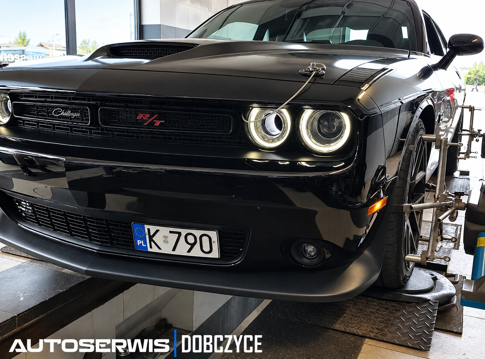

Komputerowa geometria kół
Ustawienie zbieżności
Profesjonalne ustawienie geometrii kół dla aut osobowych i dostawczych do 3,5 tony, na urządzeniu klasy premium marki Beissbarth.

Oferujemy Państwu profesjonalne ustawienie geometrii kół w samochodach osobowych i dostawczych do 3,5 tony, na wysokiej klasy urządzeniu marki Beissbarth.
Dzięki naszemu wieloletniemu doświadczeniu gwarantujemy najwyższą jakość wykonywanych usług i pełne wsparcie przy ewentualnych wadach i zastrzeżeniach względem prawidłowej sprawności pojazdu.
W naszym serwisie nie ukrywamy potencjalnych zagrożeń dla bezpieczeństwa naszych klientów.